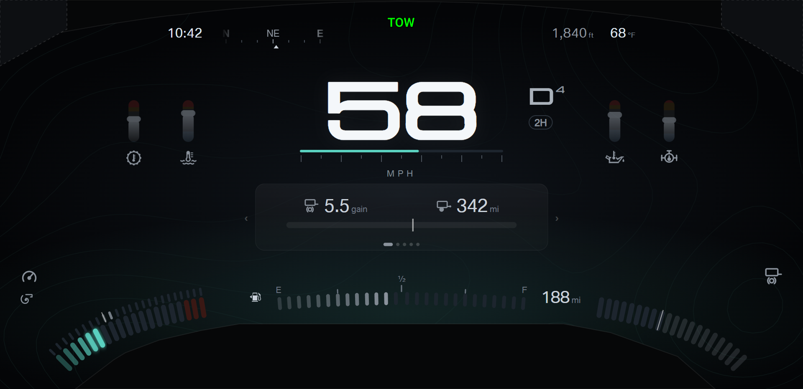
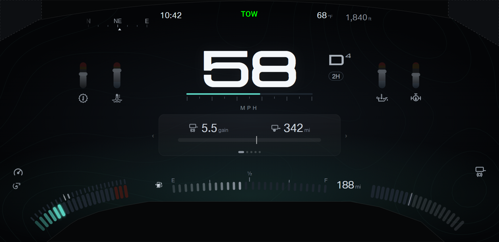

F150 cluster · Design round 22 · Layouts on the measured visible area
Rounds 4 to 21 used a guessed shroud (an arch from y 752, nothing hidden at the top). The truck photos of Factory > Screen grid
(2026-10-30) give the real hidden areas, checked by python tools/check_visible_area.py (42 of 42 edge points pass).
Every mock in this round draws the measured areas and passes the 20 px margin check (capture.js: no content in a hidden area or the margin).
- Bezel arch: hides y < 3 + (x − 960)² / 9000: 3 px at the center, 43 px at x 360 and x 1560, 106 px at the side edges.
- Steering column shroud: from y 776 at x 572 to 1348, widening to x 180 to 1710 at the bottom row.
- Wheel rim, from the driver eye with the wheel straight ahead: the top corners, down to y 158 at x 0 and y 177 at x 1920 (the dashed corners).
Result of the audit on the round 9 and round 20 layouts: the bottom corners, the fuel line, and the sides all clear the measured shroud.
Only the top bar fails. The clock and the outside temperature (x 64 and x 1856, y 28) sit behind the arch and the rim by about 100 px, and on Towing A
the heading tape and the altitude sit up to 60 px into the arch. The telltale row also touched the arch, so the row moves down to y 30 and holds at most 480 px (six wide telltales).
Earlier round shots were captured with the guessed shroud, so this round shows every open option again on the measured area.
Picks: open. Three sets, with one letter for each layout. Add &mask=1 to any page to see the 20 px margin.
Pick 1 · Top bar, for each layout
- A · One line: every top-bar item on one straight line at y 60, moved in to x 400 to 1520, where the line clears the arch. The top corners stay empty.
- B · Center group: the clock and the outside temperature sit beside the telltale row (right edge x 700, left edge x 1220), on the telltale line.
On Towing, the heading tape and the altitude sit outside them, each lower, where the arch leaves room.
- Six telltales at once (bulb check, several faults) fill x 720 to 1200 in both options. In B the clock and the temperature sit right beside a full row.
Daily A · pick A or B
Daily B · pick A or B
A · normal (temperature fan)
Towing A · pick A or B
A · highway: heading tape beside the clock, altitude beside the outside temperature

B · highway: heading tape beside the clock, altitude beside the outside temperature

A · 10 seconds after a time zone change
B · 10 seconds after a time zone change
Pick 2 · Round 9 Daily options, on the measured area (still open)
The same options as round 9; the shots below use top bar A. Fuel stays in the bottom-right corner on both daily layouts.
Daily A · pick A or B
A · Corner modules: economy left, fuel right
Daily B · pick A or B
A · Corner modules: economy left, fuel right
B · Temperature fan left, fuel right
Pick 3 · Round 20 level page on Towing A (still open)
The same options as round 20: A shows the grade and the roll as numbers with symbols; B shows the stock Ford truck images turned to the true angle.
Content gaps
These readings have a place in the layouts but no confirmed data source. Each needs a decision: keep (and add protocol work), or remove.
- Boost (Towing A corner band and engine page): no firmware field. The gauge needs a new vehicle signal (CAN protocol work).
- Trailer brake output and the BRAKING state (Towing A bottom-right corner and trailer page): only the gain setting (trucksTrailerGain) exists.
The live output needs the brake pedal and the controller output.
- Rear locker chip: alarmTable[76], not yet verified on the truck.
- Cruise states (set, adaptive, limiter): not yet verified on the truck.